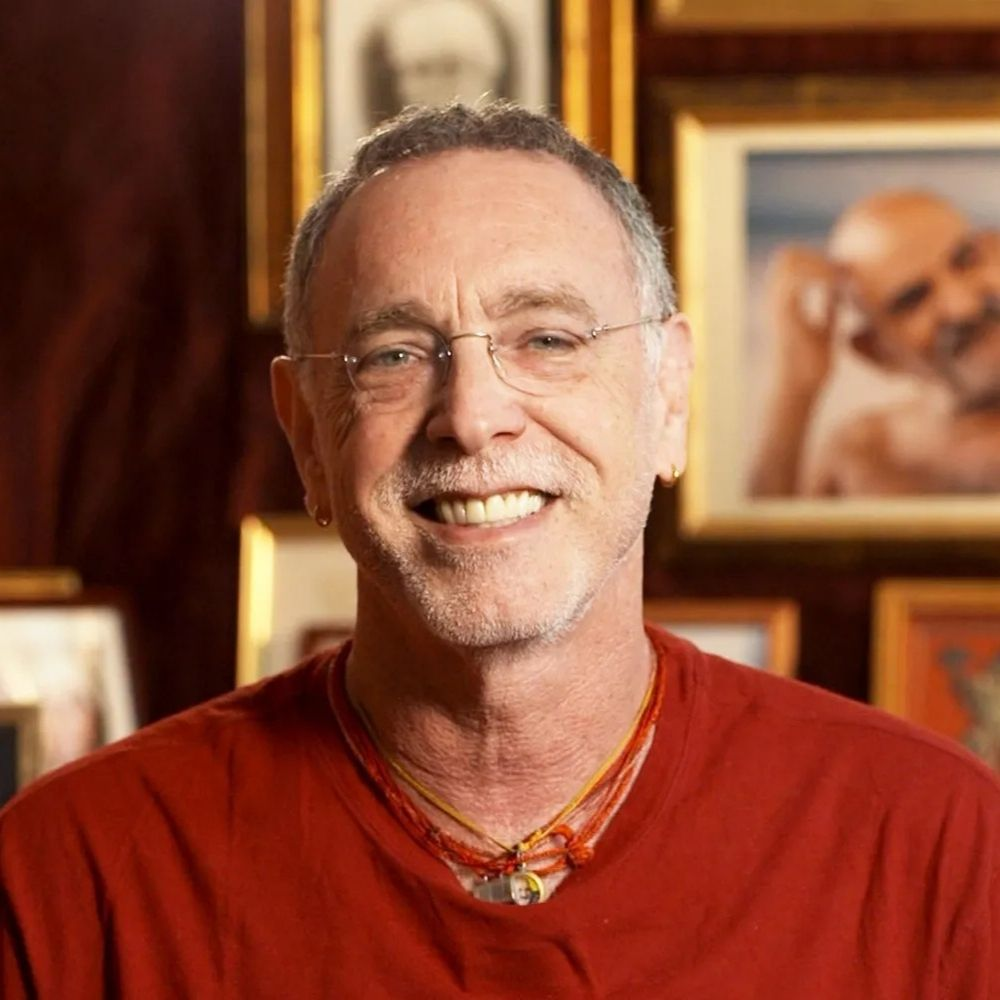
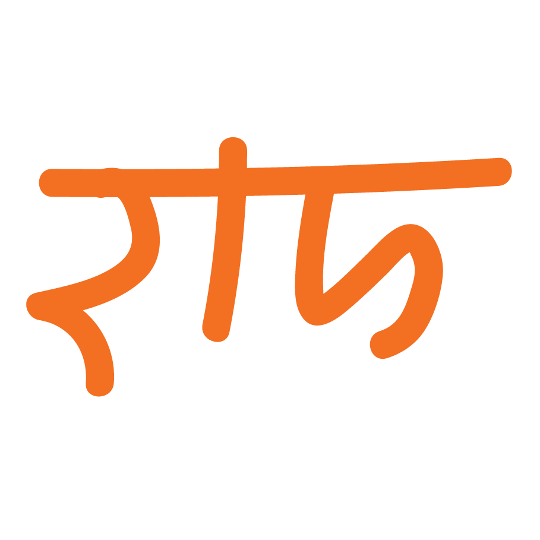
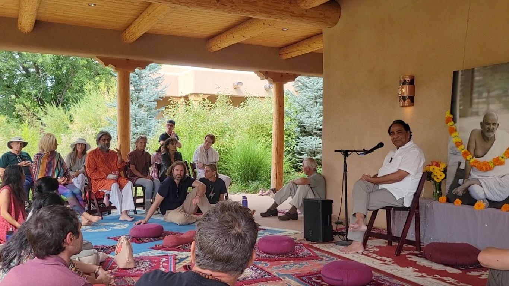
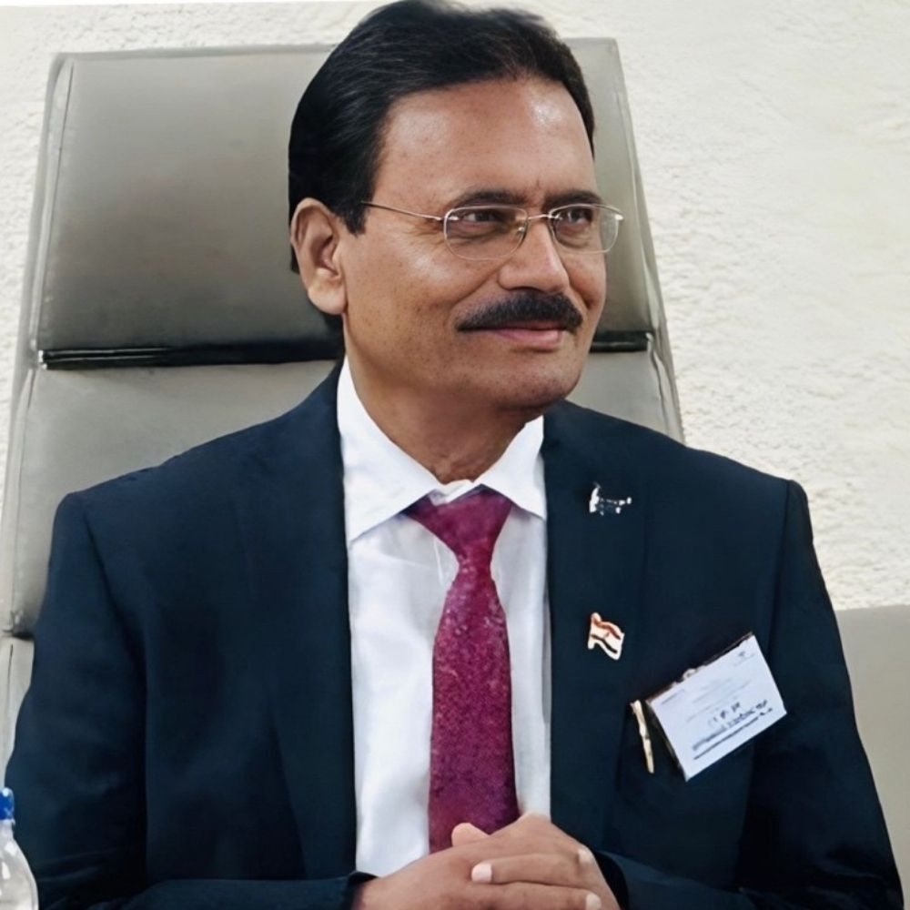

Sri Krishan Das
World-renowned kirtan wallah and lifelong devotee of Neem Karoli Maharaj, carrying Maharajji's chant tradition across continents.

Dr. Mungali Seva Foundation
The Dr. Mungali Seva Foundation is held and guided by a small circle of distinguished individuals who have offered their counsel, time and stewardship to its mission. Drawn from spiritual life, defence, diplomacy and public service, they serve as the Foundation's core stewards — anchoring our work in wisdom, integrity, and decades of lived experience.
Their continuing presence shapes how the Foundation serves people and dharma, in the lineage of Neem Karoli Maharaj.

World-renowned kirtan wallah and lifelong devotee of Neem Karoli Maharaj, carrying Maharajji's chant tradition across continents.
Decorated former General Officer Commanding-in-Chief, Southern Command, Indian Army (PVSM, AVSM, YSM, SM, VSM).
Senior Indian diplomat (IFS); High Commissioner of India to Brunei Darussalam and former Ambassador to the Kyrgyz Republic, with earlier postings across China, Mongolia and the United Nations.
Provincial Civil Service officer, Government of India.

Honorary Industry Expert at the International Council for Crisis and Disaster Response and Hon. Chairman of the IMEA Forum, MARKENOMY Foundation.
The Foundation's work continues — through satsang, documentation, and projects that support people and dharma. Your support helps us serve quietly and well.